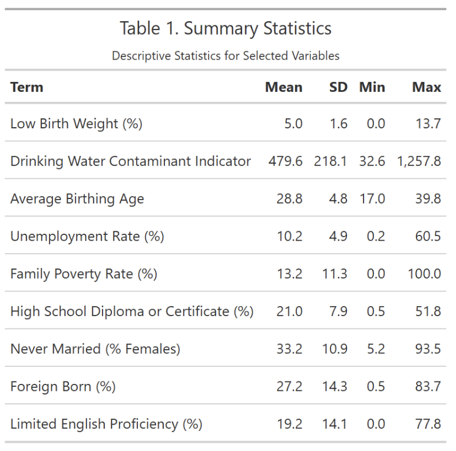

Drinking Water
Drinking Water Contamination and Low Birth Weight in California: A
Statistical Analysis
Advisor: Marianthi-Anna Kioumourtzoglou, ScD, MSPH
Abstract
Objective: To explore potential associations between
low birth weight (LBW) and a drinking water contaminant (DWC) index in
California.
Background: Exposure to various drinking water
contaminants has been associated with adverse pregnancy outcomes. Low
birthweight disparities persist and are a major determinant of chronic
illnesses later in life. California has a wealth of publicly available
environmental and health data. The 2021 CalEnviroScreen 4.0 report
includes data on LBW and DWC. We hypothesized that there were
distributional effects, latent effect modifiers, and nonlinear
relationships between DWC, LBW, and covariates.
Methods: Quantile regression, non-linear exposure
response curves, and factor analysis (FA) were applied at the census
tract level.
Results: Crude and adjusted statistical analyses found
null associations between LBW and DWC. Poverty and unemployment rate
exhibited nonlinear relationships. Risk factors with distributional
effects were poverty, marital status, foreign birth, and unemployment.
FA regression suggested that systemic disparities in minority
communities may explain disparities in LBW in California.
Conclusions: SES factors are stronger predictors of LBW
in California than the DWC index. Further research is needed to
elucidate the relationship between LBW and DWC. Public health
interventions for LBW should prioritize SES.
Introduction
Methods
Study Population
Exposure Assessment
Outcome Assessment
Covariates
Statistical Methods
Quantile and OLS Regression
Non-Linear exposure response curves
Factor Analysis (FA) Regression
Results
Population Charactertics
The average LBW across all census tracts was low, at 5.0%, with a relatively wide range from 0-13.7%. The DWC indicator also shows wide variability, with a mean of 479.6 and a range of about 33-1,258. The covariate summaries reflect variability in reproductive, socioeconomic, and demographic factors across all tracts.

Quantile and OLS Regression
Non-Linear Exposure Response Curves

Factor Analysis (FA)
Discussion
Limitations and Strengths
Conclusion
References
- August, L., Bangia, K., Plummer, L., Prasad, S., Ranjbar, K.,
Slocombe, A., & Wieland, W. (2021, October). CalEnviroScreen 4.0.
State of California OEHHA.
- Coffman, V. R., Jensen, A. S., Trabjerg, B. B., Pedersen, C. B.,
Hansen, B., Sigsgaard, T., Olsen, J., Schaumburg, I., Schullehner, J.,
Pedersen, M., & Stayner, L. T. (2021). Prenatal Exposure to Nitrate
from Drinking Water and Markers of Fetal Growth Restriction: A
Population-Based Study of Nearly One Million Danish-Born Children.
Environmental health perspectives, 129(2), 27002. https://doi.org/10.1289/EHP7331
- Diabelková, J., Rimárová, K., Urdzík, P., Dorko, E., Houžvičková,
A., Andraščíková, Š., … & Škrečková, G. (2022). Risk factors
associated with low birth weight. Cent Eur J Public Health, 30(88),
S43-9.
- DiSalvo, R. W., & Hill, E. L. (2024). Drinking Water Contaminant
Concentrations and Birth Outcomes. Journal of policy analysis and
management : [the journal of the Association for Public Policy Analysis
and Management], 43(2), 368–399. https://doi.org/10.1002/pam.22558
- Environmental Protection Agency. (n.d.). EPA. https://www.epa.gov/sdwa/title-xiv-public-health-service-act-safety-public-water-systems-safe-drinking-water-act-0
- Frank J. Bove, Mark C. Fulcomer, Judith B. Klotz, Jorge Esmart,
Ellen M. Dufficy, Jonathan E. Savrin, Public Drinking Water
Contamination and Birth Outcomes, American Journal of Epidemiology,
Volume 141, Issue 9, 1 May 1995, Pages 850–862, https://doi.org/10.1093/oxfordjournals.aje.a117521
- Grossman, D. S., & Slusky, D. J. G. (2019). The Impact of the Flint Water Crisis on Fertility. Demography, 56(6), 2005–2031. https://doi.org/10.1007/s13524-019-00831-0
- Koenker, R. (2005). Quantile Regression. Cambridge: Cambridge
University Press.
- Morton, R., & Henderson, B. L. (2008). Estimation of nonlinear
trends in water quality: An improved approach using generalized additive
models. Water Resources Research, 44(7). https://doi.org/10.1029/2007wr006191
- Oehha.ca.gov. (n.d.). https://oehha.ca.gov/calenviroscreen/report/calenviroscreen-40
- Posit team (2024). RStudio: Integrated Development Environment for
R. Posit Software, PBC, Boston, MA. URL http://www.posit.co/.
- Venkatesh, K. K., Yee, L. M., Johnson, J., Wu, J., McNeil, B.,
Mercer, B., … & Grobman, W. A. (2023). Neighborhood socioeconomic
disadvantage and abnormal birth weight. Obstetrics & Gynecology,
142(5), 1199-1207.
- Zhang, M., Yang, B. Y., Sun, Y., Qian, Z., Xaverius, P. K., Aaron,
H. E., … & Yue, W. (2022). Non-linear relationship of maternal age
with risk of spontaneous abortion: a case-control study in the china
birth cohort. Frontiers in Public Health, 10, 933654.
- Zhuang, L. H., Chen, A., Braun, J. M., Lanphear, B. P., Hu, J. M. Y., Yolton, K., & McCandless, L. C. (2021). Effects of gestational exposures to chemical mixtures on birth weight using Bayesian factor analysis in the Health Outcome and Measures of Environment (HOME) Study. Environmental epidemiology (Philadelphia, Pa.), 5(3), e159. https://doi.org/10.1097/EE9.0000000000000159